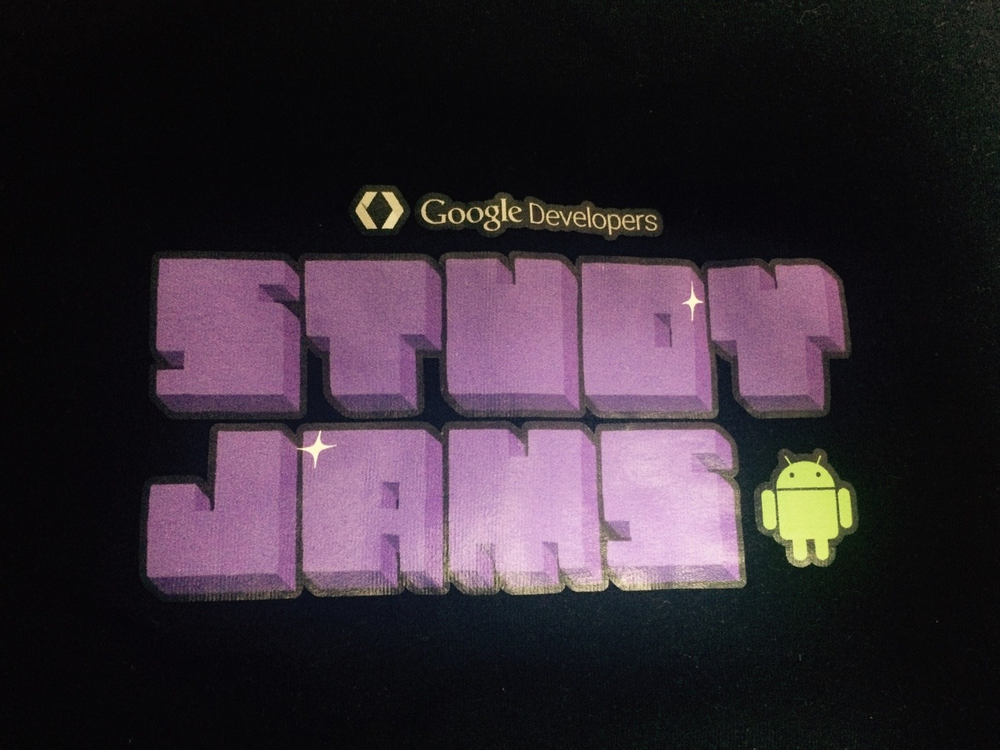

Google developers t-shirtsUdacity
안드로이드 2015년도 수강생(?)들을 위해 나눠준 티셔츠. 적어도 3년전에 받은 구글 지디지 티셔츠와 일미리도 어긋나지 않고 같은 디자인이다. 안드로이드는 귀여우나 티셔츠가 에러. ㅠㅠㅠㅠㅠ 밖에 입고나가기 힘든 프린트 (자수가 아니라 번쩍거리는 다리미질로 전사해놓은 프린트다) 잠옷용으로 사용되기 딱 좋다
. 아예 크면 괜찮은데 참 길이가 박스티로 입기도 애매하다…..
디자인 2/5
재질 3/5
총평 2/5
… 뒤에글자가 없어서 다행인지 아닌지 잘 모르겠다…….. ㅠ